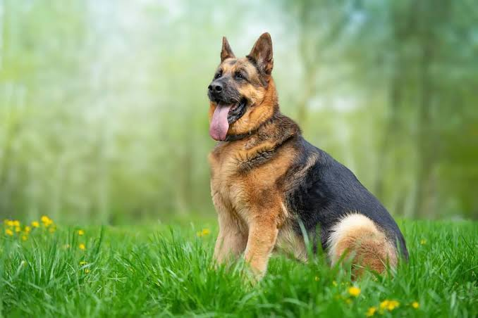
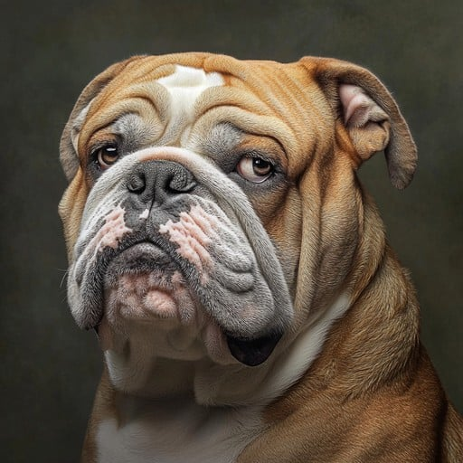

Dogs have always been known as humankind’s most loyal companions, but some breeds stand out
for their intelligence, personality, and the strong bond they form with people. In 2025, these
four breeds—Golden Retriever, German Shepherd, Bulldog, and Siberian Husky—have captured the
hearts of dog lovers worldwide. Each one offers something unique: the Golden Retriever’s
friendliness and reliability, the German Shepherd’s courage and intelligence, the Bulldog’s
calm and loving nature, and the Husky’s playful energy and stunning looks. Together, they
represent not only diversity in appearance and temperament, but also the enduring qualities
that make dogs such an important part of our families and lives.
1. Golden Retriever
Friendly, loyal, and the ultimate family dog.

2. German Shepherd
Brave and intelligent, a top working dog.

3. Bulldog
Calm and affectionate, a lovable companion.
4. Siberian Husky
Energetic and playful, famous for its striking blue eyes.
Golden Retriever
The Golden Retriever is one of the most popular and recognizable dog breeds in the world.
Originally bred in Scotland in the mid-19th century, Golden Retrievers were developed to retrieve
game during hunting. They are known for their gentle temperament, intelligence, and eagerness to
please, making them highly trainable and reliable companions. Because of these traits, Golden
Retrievers often serve as guide dogs, search-and-rescue dogs, and therapy animals.
Golden Retrievers are medium to large-sized dogs with a dense, water-repellent coat that is
usually golden or cream-colored. They are friendly with children, adults, and other pets,
which is why they are often considered the “ultimate family dog.” They require regular exercise
to stay healthy, as they are active and playful by nature. With their loyal and affectionate
personality, Golden Retrievers continue to be one of the top choices for families worldwide.
German Shepherd
The German Shepherd is a breed of working dog developed in Germany in the late 19th century.
They are widely recognized for their intelligence, courage, and versatility. German Shepherds
are used in police and military roles, as search-and-rescue dogs, and as service dogs. Their
loyalty and protective nature make them excellent guardians and companions.
Known for their strong build and alert demeanor, German Shepherds require both physical and
mental stimulation. They are highly trainable and excel in obedience, agility, and herding.
When raised in a loving home, they are affectionate family members who bond closely with their owners.
Bulldog
The Bulldog, often called the English Bulldog, is a medium-sized breed known for its muscular build,
wrinkled face, and lovable personality. Originally bred in England for bull-baiting, they have
since become gentle, affectionate pets adored worldwide. Bulldogs are calm and devoted, preferring
a relaxed lifestyle with plenty of naps.
Despite their tough appearance, Bulldogs are friendly and affectionate, especially toward children.
They adapt well to apartment living and do not require excessive exercise. Their gentle nature
makes them excellent companions for families looking for a loyal, loving dog.
Siberian Husky
The Siberian Husky is a medium-sized working dog bred by the Chukchi people of Siberia as a
sled dog. They are known for their striking appearance, including thick fur, erect triangular ears,
and piercing blue or multicolored eyes. Huskies are energetic, playful, and adventurous, making
them ideal companions for active owners.
Huskies are intelligent but often independent, requiring patient training and lots of exercise.
They are social dogs that thrive in packs, which makes them great for families with multiple pets.
With their beauty, stamina, and lively personality, Siberian Huskies remain one of the most iconic
and admired breeds worldwide.